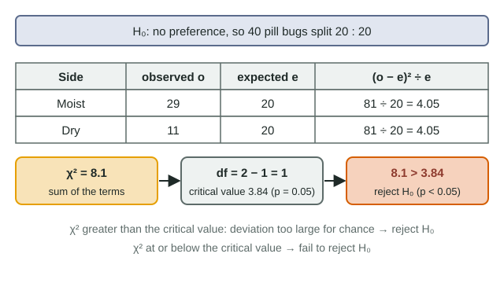

Counts that do not quite match
A student releases 40 pill bugs into a chamber with a moist side and a dry side, identical in light and temperature. After 10 minutes, 29 are on the moist side and 11 on the dry side. If the animals had no preference, you would expect about 20 on each side, but not exactly 20: flip 40 coins and you seldom get exactly 20 heads. The chi-square test (χ²) tells you whether the gap between what you observed and what the null hypothesis leads you to expect is too large to blame on chance.
Worked example: a two-category test

- Null hypothesis: pill bugs show no preference between moist and dry, so they split equally.
- Expected counts: 40 × ½ = 20 moist, 20 dry.
- Each term (o − e)² ÷ e: moist (29 − 20)² ÷ 20 = 81 ÷ 20 = 4.05; dry (11 − 20)² ÷ 20 = 4.05.
- χ² = Σ (o − e)² ÷ e = 4.05 + 4.05 = 8.1.
- Degrees of freedom: categories − 1 = 2 − 1 = 1.
- Critical value at p = 0.05, df = 1: 3.84.
- Decision: 8.1 > 3.84, so p < 0.05. Reject the null hypothesis: a split this uneven is unlikely to be chance.
The biology fits: pill bugs breathe through gill-like structures that must stay moist, so animals that end up in damp places lose less water. The test itself only says the distribution is not random; the biology suggests why.
Reading the critical value table
| p | df 1 | df 2 | df 3 | df 4 | df 5 |
|---|---|---|---|---|---|
| 0.05 | 3.84 | 5.99 | 7.82 | 9.49 | 11.07 |
| 0.01 | 6.63 | 9.21 | 11.34 | 13.28 | 15.09 |
- Degrees of freedom = number of categories − 1 (not the number of individuals).
- The significance level is chosen before the test, almost always p = 0.05.
- If χ² > critical value, the p-value is below the significance level: reject the null. If χ² ≤ critical value, fail to reject.
The p-value is the probability of a deviation at least this large if the null hypothesis were true. It is not the probability that either hypothesis is true.
A four-category example
Sixty pill bugs in a chamber with four equal sections ended up: dark-moist 24, dark-dry 14, light-moist 13, light-dry 9. The null (no preference) predicts 15 in each.
| Section | o | e | (o − e)² ÷ e |
|---|---|---|---|
| Dark, moist | 24 | 15 | 81 ÷ 15 = 5.40 |
| Dark, dry | 14 | 15 | 1 ÷ 15 = 0.07 |
| Light, moist | 13 | 15 | 4 ÷ 15 = 0.27 |
| Light, dry | 9 | 15 | 36 ÷ 15 = 2.40 |
| Total | 60 | 60 | χ² = 8.13 |
df = 4 − 1 = 3. At p = 0.05 the critical value is 7.82; 8.13 is greater, so reject the null. At the stricter p = 0.01 the critical value is 11.34, and 8.13 falls short, so 0.01 < p < 0.05. The dark-moist section supplies two thirds of χ²: that is where the animals clustered.
Expected counts from any ratio
The null hypothesis does not have to be an equal split. If birds are expected to visit three feeders in proportion to their size, 50% : 30% : 20%, then 200 visits give expected counts of 100, 60 and 40. Observed 86, 74 and 40 give χ² = 1.96 + 3.27 + 0 = 5.23; with df = 2 the critical value is 5.99, so fail to reject. Check that your expected counts add up to the same total as your observed counts.
Common slips
- Using percentages or means instead of counts. Chi-square depends on how many individuals you counted: the same 72.5 : 27.5 split gives χ² = 8.1 with 40 animals and 81 with 400.
- Counting individuals instead of categories for df.
- Reading "χ² bigger than the critical value" as support for the null. It is the opposite.
- Writing "accept the null" or "prove". Say "reject" or "fail to reject".